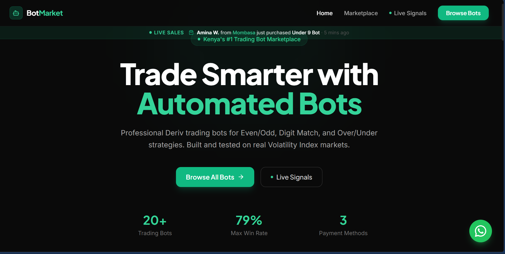

BotMarket Kenya
A marketplace for browsing and distributing automated trading scripts and analytics tools.
A web-based marketplace and repository designed to showcase and distribute automated trading scripts and financial analytics tools. Traders get direct access to customizable trading logic, strategy previews, and automation solutions.
View Live Site